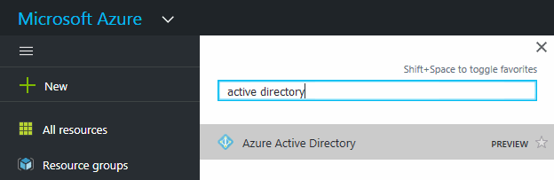

문서 변경 요청
문서 변경 요청 이 페이지 편집
이 페이지 편집 기여하는 방법 자세히 알아보기
기여하는 방법 자세히 알아보기Cloud Manager에 클라우드 공급자 계정 추가
다른 클라우드 계정에 Cloud Volumes ONTAP를 배포하려면 해당 계정에 필요한 권한을 제공한 다음 세부 정보를 Cloud Manager에 추가해야 합니다.
Cloud Central에서 Cloud Manager를 구축하면 Cloud Manager가 자동으로 을 추가합니다 "클라우드 공급자 계정입니다" Cloud Manager를 구축한 계정의 경우 기존 시스템에 Cloud Manager 소프트웨어를 수동으로 설치한 경우 초기 클라우드 공급자 계정이 추가되지 않습니다.
Cloud Manager에 AWS 계정 설정 및 추가
다른 AWS 계정에 Cloud Volumes ONTAP를 구축하려는 경우 해당 계정에 필요한 권한을 제공한 다음 세부 정보를 Cloud Manager에 추가해야 합니다. 사용 권한을 제공하는 방법은 Cloud Manager에 AWS 키를 제공할지, 아니면 신뢰할 수 있는 계정에서 역할의 ARN을 제공하는지에 따라 달라집니다.
AWS 키를 제공할 때 사용 권한 부여
Cloud Manager에 IAM 사용자를 위한 AWS 키를 제공하려면 해당 사용자에게 필요한 권한을 부여해야 합니다. Cloud Manager IAM 정책은 Cloud Manager에서 사용할 수 있는 AWS 작업 및 리소스를 정의합니다.
-
에서 Cloud Manager IAM 정책을 다운로드합니다 "Cloud Manager 정책 페이지".
-
IAM 콘솔에서 Cloud Manager IAM 정책의 텍스트를 복사하여 붙여넣어 고유한 정책을 생성합니다.
-
IAM 역할 또는 IAM 사용자에 정책을 연결합니다.
이제 계정에 필요한 권한이 있습니다. 이제 Cloud Manager에 추가할 수 있습니다.
다른 계정에서 IAM 역할을 가정하여 권한 부여
IAM 역할을 사용하여 Cloud Manager 인스턴스와 다른 AWS 계정을 구축한 소스 AWS 계정과 신뢰 관계를 설정할 수 있습니다. 그런 다음 Cloud Manager에 신뢰할 수 있는 계정의 IAM 역할 ARN을 제공합니다.
-
Cloud Volumes ONTAP를 배포하려는 대상 계정으로 이동하여 * 다른 AWS 계정 * 을 선택하여 IAM 역할을 생성합니다.
다음을 수행하십시오.
-
Cloud Manager 인스턴스가 있는 계정의 ID를 입력합니다.
-
에서 사용할 수 있는 Cloud Manager IAM 정책을 연결합니다 "Cloud Manager 정책 페이지".

-
-
Cloud Manager 인스턴스가 있는 소스 계정으로 이동하여 인스턴스에 연결된 IAM 역할을 선택합니다.
-
신뢰 관계 > 신뢰 관계 편집 * 을 클릭합니다.
-
"STS:AssumRole" 작업과 대상 계정에서 생성한 역할의 ARN을 추가합니다.
-
예 *
-
{ "Version": "2012-10-17", "Statement": { "Effect": "Allow", "Action": "sts:AssumeRole", "Resource": "arn:aws:iam::ACCOUNT-B-ID:role/ACCOUNT-B-ROLENAME" } } -
이제 계정에 필요한 권한이 있습니다. 이제 Cloud Manager에 추가할 수 있습니다.
Cloud Manager에 AWS 계정 추가
필요한 권한이 있는 AWS 계정을 제공한 후 Cloud Manager에 계정을 추가할 수 있습니다. 그러면 해당 계정에서 Cloud Volumes ONTAP 시스템을 시작할 수 있습니다.
-
Cloud Manager 콘솔의 오른쪽 위에서 작업 드롭다운 목록을 클릭한 다음 * 계정 설정 * 을 선택합니다.
-
새 계정 추가 * 를 클릭하고 * AWS * 를 선택합니다.
-
AWS 키를 제공할지 또는 신뢰할 수 있는 IAM 역할의 ARN을 제공할지 여부를 선택합니다.
-
정책 요구 사항이 충족되었는지 확인한 다음 * 계정 생성 * 을 클릭합니다.
이제 새 작업 환경을 생성할 때 세부 정보 및 자격 증명 페이지에서 다른 계정으로 전환할 수 있습니다.

Cloud Manager에 Azure 계정 설정 및 추가
다른 Azure 계정에 Cloud Volumes ONTAP를 배포하려는 경우 해당 계정에 필요한 권한을 제공한 다음 Cloud Manager에 계정에 대한 세부 정보를 추가해야 합니다.
서비스 보안 주체를 사용하여 Azure 사용 권한 부여
Cloud Manager는 Azure에서 작업을 수행할 수 있는 권한이 필요합니다. Azure Active Directory에서 서비스 보안 주체를 생성 및 설정하고 Cloud Manager에 필요한 Azure 자격 증명을 획득하여 Azure 계정에 필요한 권한을 부여할 수 있습니다.
다음 그림에서는 Cloud Manager가 Azure에서 작업을 수행할 수 있는 권한을 얻는 방법을 보여 줍니다. 하나 이상의 Azure 구독에 연결된 서비스 보안 주체 개체는 Azure Active Directory의 Cloud Manager를 나타내며 필요한 권한을 허용하는 사용자 지정 역할에 할당됩니다.


|
다음 단계에서는 새로운 Azure 포털을 사용합니다. 문제가 발생하는 경우 Azure Classic 포털을 사용해야 합니다. |
필요한 Cloud Manager 권한으로 사용자 지정 역할 생성
Azure에서 Cloud Volumes ONTAP를 시작 및 관리하는 데 필요한 권한을 클라우드 관리자에게 제공하려면 사용자 지정 역할이 필요합니다.
-
를 다운로드합니다 "Cloud Manager Azure 정책".
-
할당 가능한 범위에 Azure 구독 ID를 추가하여 JSON 파일을 수정합니다.
사용자가 Cloud Volumes ONTAP 시스템을 생성할 각 Azure 구독에 대한 ID를 추가해야 합니다.
-
예 *
"AssignableScopes": [ "/subscriptions/d333af45-0d07-4154-943d-c25fbzzzzzzz", "/subscriptions/54b91999-b3e6-4599-908e-416e0zzzzzzz", "/subscriptions/398e471c-3b42-4ae7-9b59-ce5bbzzzzzzz" -
-
JSON 파일을 사용하여 Azure에서 사용자 지정 역할을 생성합니다.
다음 예에서는 Azure CLI 2.0을 사용하여 사용자 지정 역할을 생성하는 방법을 보여 줍니다.
-
az 역할 정의 create — 역할 정의 C:\Policy_for_cloud_Manager_Azure_3.6.1.json *
-
이제 OnCommand 클라우드 관리자 운영자 라는 사용자 지정 역할을 갖게 됩니다.
Active Directory 서비스 보안 주체 만들기
Cloud Manager가 Azure Active Directory로 인증할 수 있도록 Active Directory 서비스 보안 주체를 만들어야 합니다.
Active Directory 응용 프로그램을 만들고 응용 프로그램을 역할에 할당하려면 Azure에 적절한 권한이 있어야 합니다. 자세한 내용은 을 참조하십시오 "Microsoft Azure 설명서: 포털을 사용하여 리소스에 액세스할 수 있는 Active Directory 응용 프로그램 및 서비스 보안 주체를 만듭니다".
-
Azure 포털에서 * Azure Active Directory * 서비스를 엽니다.

-
메뉴에서 * 앱 등록(레거시) * 을 클릭합니다.
-
서비스 보안 주체 만들기:
-
새 응용 프로그램 등록 * 을 클릭합니다.
-
응용 프로그램 이름을 입력하고 * Web App/API * 를 선택한 상태로 URL을 입력합니다(예: http://url
-
Create * 를 클릭합니다.
-
-
응용 프로그램을 수정하여 필요한 권한을 추가합니다.
-
생성된 애플리케이션을 선택합니다.
-
설정에서 * 필요한 권한 * 을 클릭한 다음 * 추가 * 를 클릭합니다.

-
Select an API * 를 클릭하고 * Windows Azure Service Management API * 를 선택한 다음 * Select * 를 클릭합니다.

-
조직 사용자로 Azure 서비스 관리 액세스 * 를 클릭하고 * 선택 * 을 클릭한 다음 * 완료 * 를 클릭합니다.
-
-
서비스 보안 주체에 대한 키를 생성합니다.
-
설정에서 * 키 * 를 클릭합니다.
-
설명을 입력하고 기간을 선택한 다음 * 저장 * 을 클릭합니다.
-
키 값을 복사합니다.
클라우드 공급자 계정을 Cloud Manager에 추가할 때 키 값을 입력해야 합니다.
-
속성 * 을 클릭한 다음 서비스 보안 주체에 대한 응용 프로그램 ID를 복사합니다.
키 값과 마찬가지로, Cloud Manager에 클라우드 공급자 계정을 추가할 때 Cloud Manager에 애플리케이션 ID를 입력해야 합니다.

-
-
조직의 Active Directory 테넌트 ID를 가져옵니다.
-
Active Directory 메뉴에서 * 속성 * 을 클릭합니다.
-
디렉터리 ID를 복사합니다.

애플리케이션 ID 및 애플리케이션 키와 마찬가지로 클라우드 공급자 계정을 Cloud Manager에 추가할 때 Active Directory 테넌트 ID를 입력해야 합니다.
-
이제 Active Directory 서비스 보안 주체가 있어야 하며 응용 프로그램 ID, 응용 프로그램 키 및 Active Directory 테넌트 ID를 복사해야 합니다. 클라우드 공급자 계정을 추가할 때는 Cloud Manager에 이 정보를 입력해야 합니다.
서비스 보안 주체에 Cloud Manager 운영자 역할 할당
서비스 보안 주체를 하나 이상의 Azure 구독에 바인딩하고 Cloud Manager 운영자 역할을 할당해야만 Cloud Manager가 Azure에서 권한을 갖게 됩니다.
여러 Azure 구독에서 Cloud Volumes ONTAP를 배포하려면 서비스 보안 주체를 해당 구독 각각에 바인딩해야 합니다. Cloud Manager를 사용하면 Cloud Volumes ONTAP를 구축할 때 사용할 구독을 선택할 수 있습니다.
-
Azure 포털의 왼쪽 창에서 * 구독 * 을 선택합니다.
-
구독을 선택합니다.
-
IAM(Access Control) * 을 클릭한 다음 * 추가 * 를 클릭합니다.
-
OnCommand 클라우드 관리자 운영자 * 역할을 선택하십시오.
-
응용 프로그램의 이름을 검색합니다(스크롤하면 목록에서 찾을 수 없음).
-
응용 프로그램을 선택하고 * 선택 * 을 클릭한 다음 * 확인 * 을 클릭합니다.
이제 Cloud Manager의 서비스 보안 주체에 필요한 Azure 권한이 있습니다.
Cloud Manager에 Azure 계정 추가
필요한 권한이 있는 Azure 계정을 제공한 후 Cloud Manager에 계정을 추가할 수 있습니다. 그러면 해당 계정에서 Cloud Volumes ONTAP 시스템을 시작할 수 있습니다.
-
Cloud Manager 콘솔의 오른쪽 위에서 작업 드롭다운 목록을 클릭한 다음 * 계정 설정 * 을 선택합니다.
-
새 계정 추가 * 를 클릭하고 * Microsoft Azure * 를 선택합니다.
-
필요한 권한을 부여하는 Azure Active Directory 서비스 보안 주체에 대한 정보를 입력합니다.
-
정책 요구 사항이 충족되었는지 확인한 다음 * 계정 생성 * 을 클릭합니다.
이제 새 작업 환경을 생성할 때 세부 정보 및 자격 증명 페이지에서 다른 계정으로 전환할 수 있습니다.

관리되는 ID와 추가 Azure 구독을 연결합니다
Cloud Manager를 사용하면 Cloud Volumes ONTAP를 배포할 Azure 계정 및 구독을 선택할 수 있습니다. 를 연결하지 않으면 관리 ID 프로필에 대해 다른 Azure 구독을 선택할 수 없습니다 "관리 ID" 있습니다.
관리 ID가 초기 ID입니다 "클라우드 공급자 계정입니다" NetApp Cloud Central에서 Cloud Manager를 구축할 때 Cloud Manager를 구축하면 Cloud Central에서 OnCommand Cloud Manager 운영자 역할을 생성하여 Cloud Manager 가상 머신에 할당합니다.
-
Azure 포털에 로그인합니다.
-
Subscriptions * 서비스를 연 다음 Cloud Volumes ONTAP 시스템을 배포할 구독을 선택합니다.
-
IAM(액세스 제어) * 을 클릭합니다.
-
Add * > * Add role assignment * 를 클릭한 후 권한을 추가합니다.
-
OnCommand 클라우드 관리자 운영자 * 역할을 선택하십시오.
OnCommand Cloud Manager Operator는 에 제공되는 기본 이름입니다 "Cloud Manager 정책". 역할에 다른 이름을 선택한 경우 대신 해당 이름을 선택합니다. -
Virtual Machine * 에 대한 액세스 권한을 할당합니다.
-
Cloud Manager 가상 머신이 생성된 서브스크립션을 선택합니다.
-
Cloud Manager 가상 머신을 선택합니다.
-
저장 * 을 클릭합니다.
-
-
-
추가 구독에 대해 이 단계를 반복합니다.
새 작업 환경을 만들 때 이제 관리되는 ID 프로필에 대해 여러 Azure 구독에서 선택할 수 있습니다.